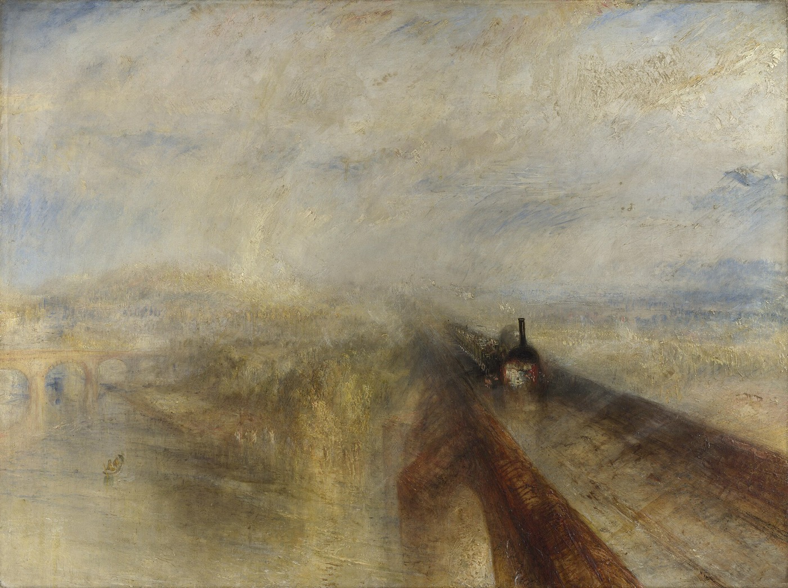

the Great Western Railway, 1844 · after J. M. W. Turner
J. M. W. Turner showed this picture at the Royal Academy in 1844. It hangs in the National Gallery, London. An engine of the Firefly class brings a train of open wagons west over Brunel's bridge at Maidenhead; we look east, towards London, and the old road bridge of the 1770s stands on the left.
Real: the bridge, in use from July 1839, with its two wide, flat brick arches; the track seven feet wide, its rails laid on long timbers; the engine, shaped here after the working replica of Fire Fly at Didcot, with one pair of seven-foot driving wheels, a tall chimney and no cab; the open wagons, in which those who paid least rode with the goods; the boat and the plough in the picture; and the hare. Turner brushed the hare in at the last, the paint has since gone transparent, and it shows now only in an engraving of 1859. The first picture you passed is his Ploughing Up Turnips, near Slough, shown in 1809 (Tate): Windsor Castle in the mist.
What you did: the picture is named for rain, steam and speed, not for the train. The National Gallery quotes the historian John Gage: Turner was painting "not a view of the Great Western Railway, but an allegory of the forces of nature". So the engine is a dark shape in gold mist, and the picture would not come until you had made all three. The sixty miles an hour is the Gallery's figure for this stretch of line. That things blur into paint as the train gathers speed is the game's way of showing it; nobody let a child drive.
Imagined: you, the driver, the fireman, the passengers and what they all wear; the station; the luggage; the size and fittings of the wagons; and the view of that field from the line, which was not built until thirty years after he painted it. Nobody ran along the top of a moving train.
Paintings: public domain, via Wikimedia Commons. Sources for every statement: turner/research/FINDINGS.md.